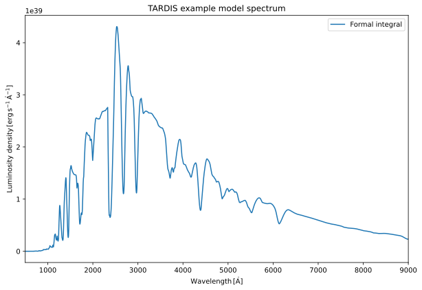

You can interact with this notebook online: Launch notebook
Analysing Spectrum
[1]:
from tardis.visualization import plot_util as pu
from astropy import units as u
Initializing tabulator and plotly panel extensions for widgets to work
Every simulation run requires atomic data and a configuration file.
Atomic Data
We recommend using the kurucz_cd23_chianti_H_He.h5 dataset.
[2]:
from tardis.io.atom_data import download_atom_data
# We download the atomic data needed to run the simulation
download_atom_data("kurucz_cd23_chianti_H_He_latest")
Configuration File /home/runner/.astropy/config/tardis_internal_config.yml does not exist - creating new one from default
CRITICAL:root:
********************************************************************************
TARDIS will download different kinds of data (e.g. atomic) to its data directory /home/runner/Downloads/tardis-data
TARDIS DATA DIRECTORY not specified in /home/runner/.astropy/config/tardis_internal_config.yml:
ASSUMING DEFAULT DATA DIRECTORY /home/runner/Downloads/tardis-data
YOU CAN CHANGE THIS AT ANY TIME IN /home/runner/.astropy/config/tardis_internal_config.yml
********************************************************************************
WARNING:tardis.io.atom_data.atom_web_download:Atomic Data kurucz_cd23_chianti_H_He_latest already exists in /home/runner/Downloads/tardis-data/kurucz_cd23_chianti_H_He_latest.h5. Will not download - override with force_download=True.
You can also obtain a copy of the atomic data from the tardis-regression-data repository.
Example Configuration File
The configuration file tardis_example.yml is used throughout this Quickstart.
[3]:
!wget -q -nc https://raw.githubusercontent.com/tardis-sn/tardis/master/docs/tardis_example.yml
[4]:
!cat tardis_example.yml
# Example YAML configuration for TARDIS
tardis_config_version: v1.0
supernova:
luminosity_requested: 9.44 log_lsun
time_explosion: 13 day
atom_data: kurucz_cd23_chianti_H_He_latest.h5
model:
structure:
type: specific
velocity:
start: 1.1e4 km/s
stop: 20000 km/s
num: 20
density:
type: branch85_w7
abundances:
type: uniform
O: 0.19
Mg: 0.03
Si: 0.52
S: 0.19
Ar: 0.04
Ca: 0.03
plasma:
disable_electron_scattering: no
ionization: lte
excitation: lte
radiative_rates_type: dilute-blackbody
line_interaction_type: macroatom
montecarlo:
seed: 23111963
no_of_packets: 4.0e+4
iterations: 20
nthreads: 1
last_no_of_packets: 1.e+5
no_of_virtual_packets: 10
convergence_strategy:
type: damped
damping_constant: 1.0
threshold: 0.05
fraction: 0.8
hold_iterations: 3
t_inner:
damping_constant: 0.5
spectrum:
start: 500 angstrom
stop: 20000 angstrom
num: 10000
Running the Simulation
To run the simulation, import the run_tardis function and create the sim object.
Note:
Get more information about the progress bars, logging configuration, and convergence plots.
[5]:
from tardis import run_tardis
sim = run_tardis(
"tardis_example.yml",
log_level="ERROR"
)
Auto-detected Sphinx build environment
Auto-detected Sphinx build environment
Embedding the final state for Jupyter environments
HDF
TARDIS can save simulation data to HDF files for later analysis. The code below shows how to load a simulation from an HDF file. This is useful when you want to analyze simulation results without re-running the simulation.
[6]:
# import astropy.units as u
# import pandas as pd
# hdf_fpath = "add_file_path_here"
# with pd.HDFStore(hdf_fpath, "r") as hdf:
# sim = u.Quantity(hdf["/simulation"])
Calculate integrated spectrum
Note:
It takes about a minute to calculate. Please be patient while it runs.
[7]:
spectrum_integrated = sim.spectrum_solver.spectrum_integrated
Plotting the Spectrum
Now we will plot the spectrum using matplotlib and plotly. The plots show the luminosity density as a function of wavelength.
\(\textbf{Wavelength } [\overset{\circ}{A}]\): The x-axis represents the wavelength in Angstroms.
\(\textbf{Luminosity density} [erg\;s^{-1}\;\overset{\circ}{A^{-1}}]\): The y-axis represents the luminosity density in erg per second per Angstrom.
Matplotlib
We use Matplotlib to create a static plot of the formal integral spectrum that was calculated in the previous step.
[8]:
%matplotlib inline
import matplotlib.pyplot as plt
# Create a new figure with specified dimensions
plt.figure(figsize=(10, 6.5))
spectrum_integrated.plot(label="Formal integral") # Plot spectrum from formal integral solution
xlabel = pu.axis_label_in_latex("Wavelength", u.AA)
ylabel = pu.axis_label_in_latex(
"Luminosity density", u.Unit("erg/(s AA)"), only_text=True
)
# Set title, labels, and template
plt.xlim(500, 9000)
plt.title("TARDIS example model spectrum")
plt.xlabel(xlabel)
plt.ylabel(ylabel)
plt.legend()
plt.show()

Plotly
Here, we use Plotly to create an interactive plot of the virtual packet spectrum generated by the TARDIS simulation.
[9]:
import plotly.graph_objects as go
# Create a new figure for plotting the spectrum
fig = go.Figure()
# Plot the wavelength spectrum
fig.add_trace(
go.Scatter(
x=sim.spectrum_solver.spectrum_virtual_packets.wavelength,
y=sim.spectrum_solver.spectrum_virtual_packets.luminosity_density_lambda,
mode="lines",
name="Spectrum"
)
)
xlabel = pu.axis_label_in_latex("Wavelength", u.AA)
ylabel = pu.axis_label_in_latex(
"Luminosity density", u.Unit("erg/(s AA)"), only_text=True
)
# Set title, labels, and template
fig.update_layout(
title="TARDIS example model spectrum",
xaxis_title=xlabel,
yaxis_title=ylabel,
xaxis_range=[500, 9000],
showlegend=True,
template="plotly_white"
)
# Display the plot
fig.show()
[ ]: